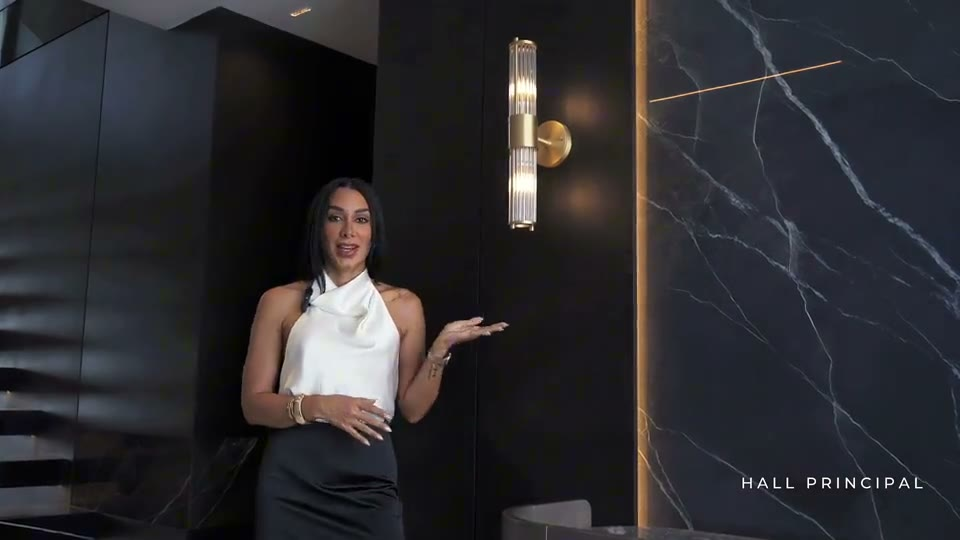
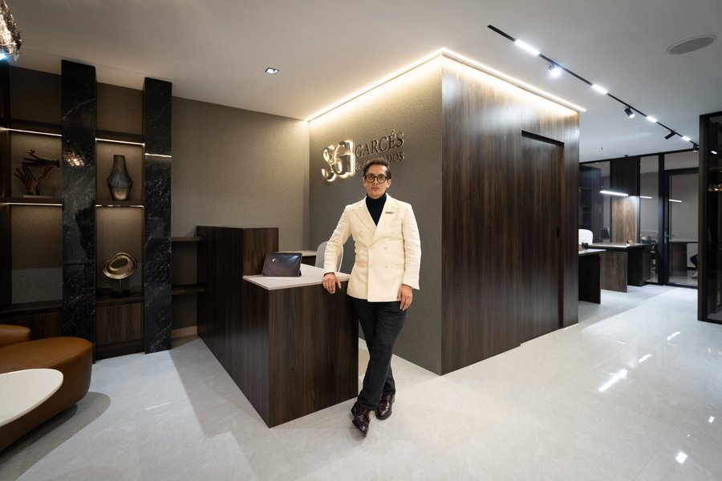
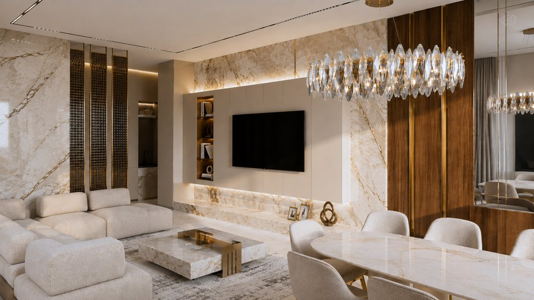
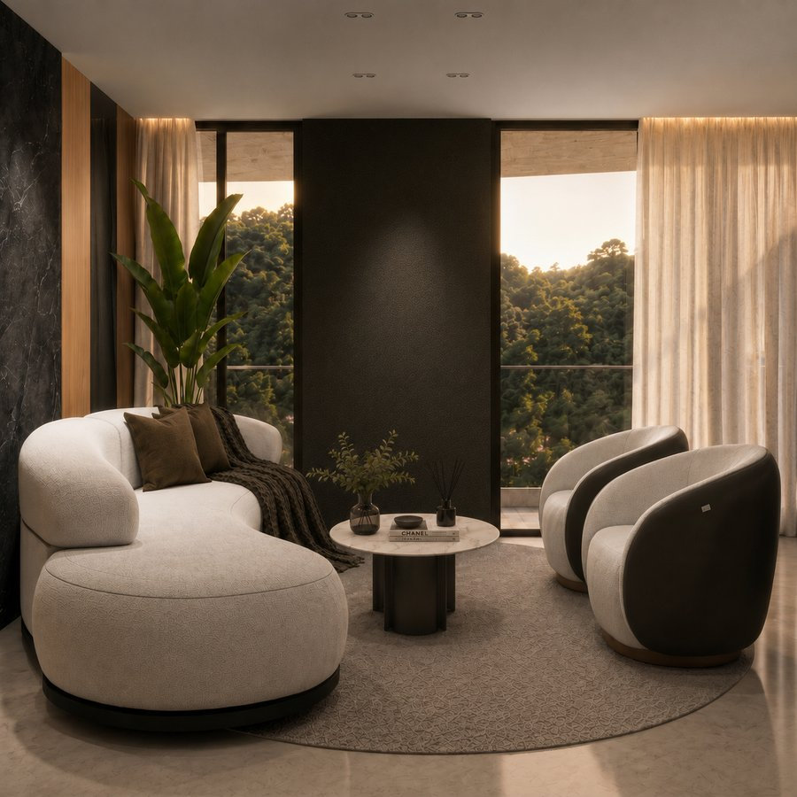

Manta, Ecuador. Último piso del edificio más exclusivo de la ciudad. Frente al océano Pacífico.
Skorpios no sigue referencias. Es una referencia en sí mismo. Concebido desde el contraste entre la calidez de la madera y la nobleza de la piedra, entre lo orgánico y lo arquitectónico, es un espacio que establece su propio estándar desde la primera mirada.
El recibidor en espejo y piedra italiana, con luz focal, declara desde la entrada lo que este proyecto es. Dekton y piedra italiana recorren superficies con presencia y carácter. El roble marfil y roble americano en acabado lacado contrastan con volúmenes en negro profundo. Los lavamanos esculpidos en piedra se convierten en objetos de autor. El tapiz italiano, la iluminación en cristal diseñada a medida y los espejos completan una atmósfera que cambia con cada hora del día: íntima, profunda e irrepetible.
Skorpios no es un apartamento frente al mar. Es el mar, reinterpretado desde adentro.


